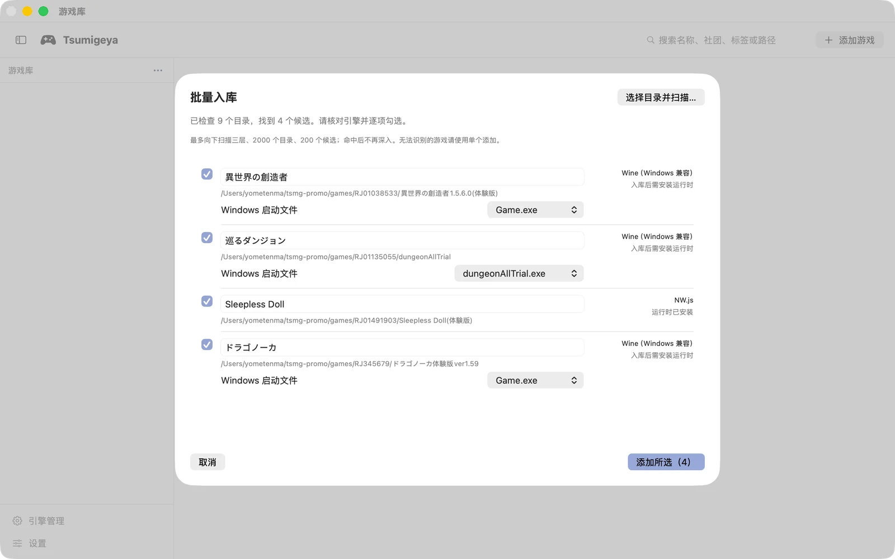
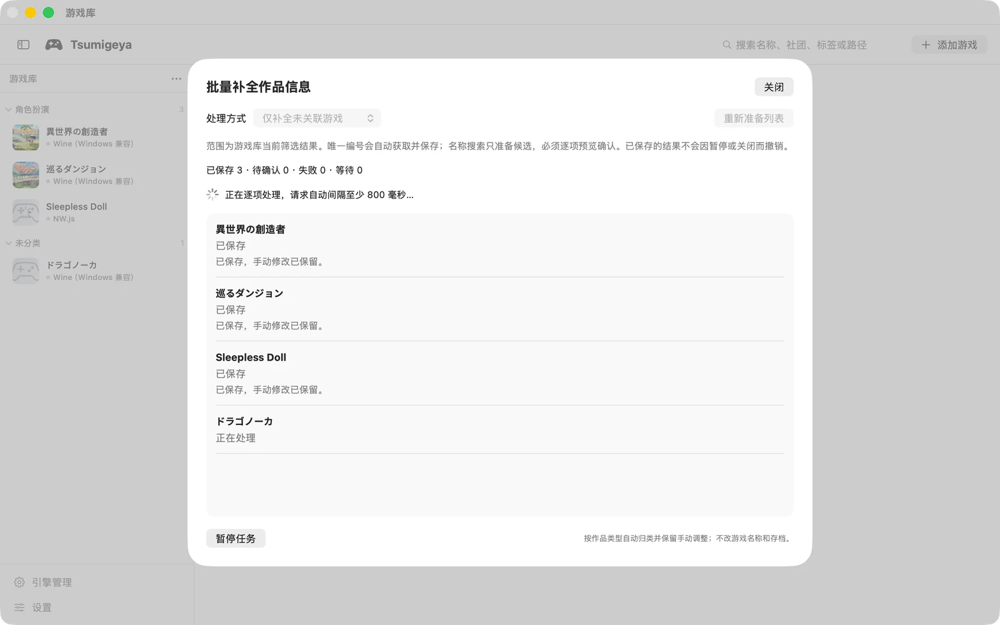
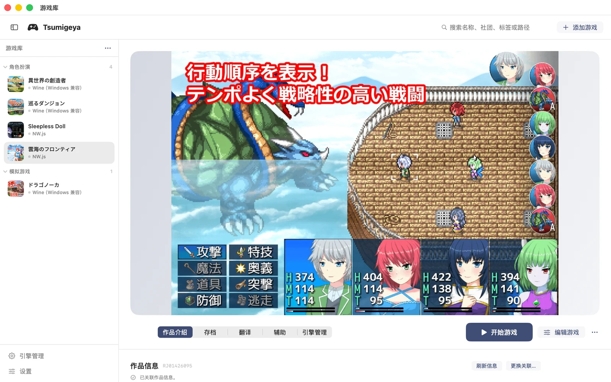
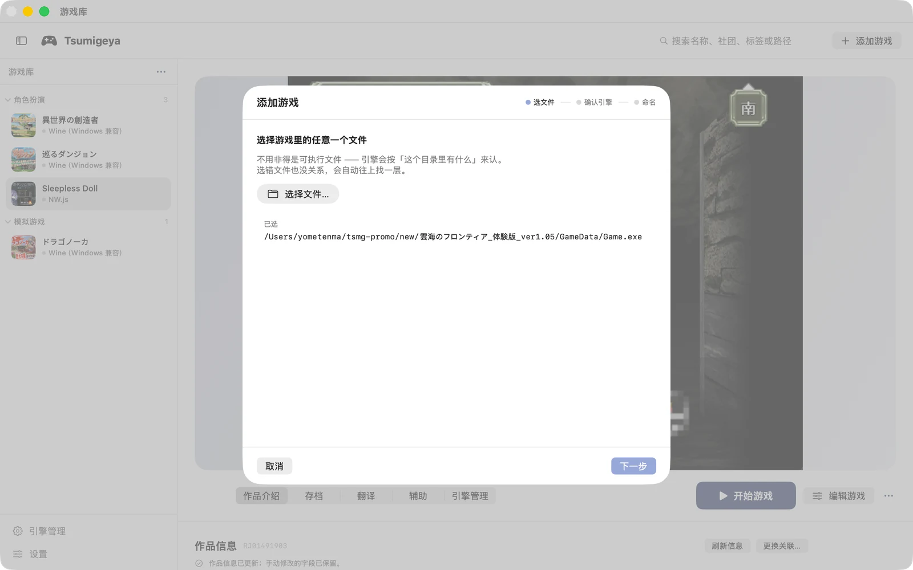
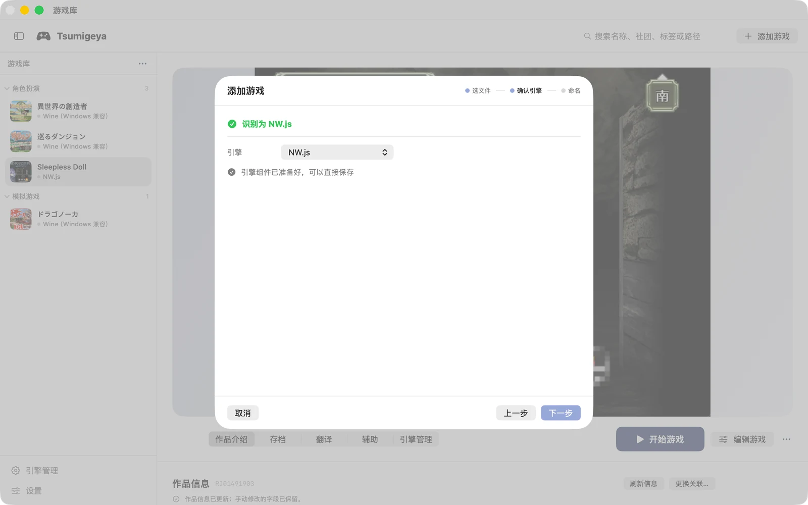
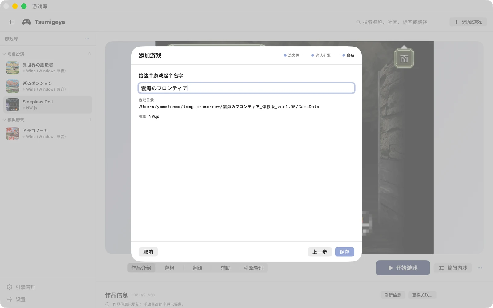
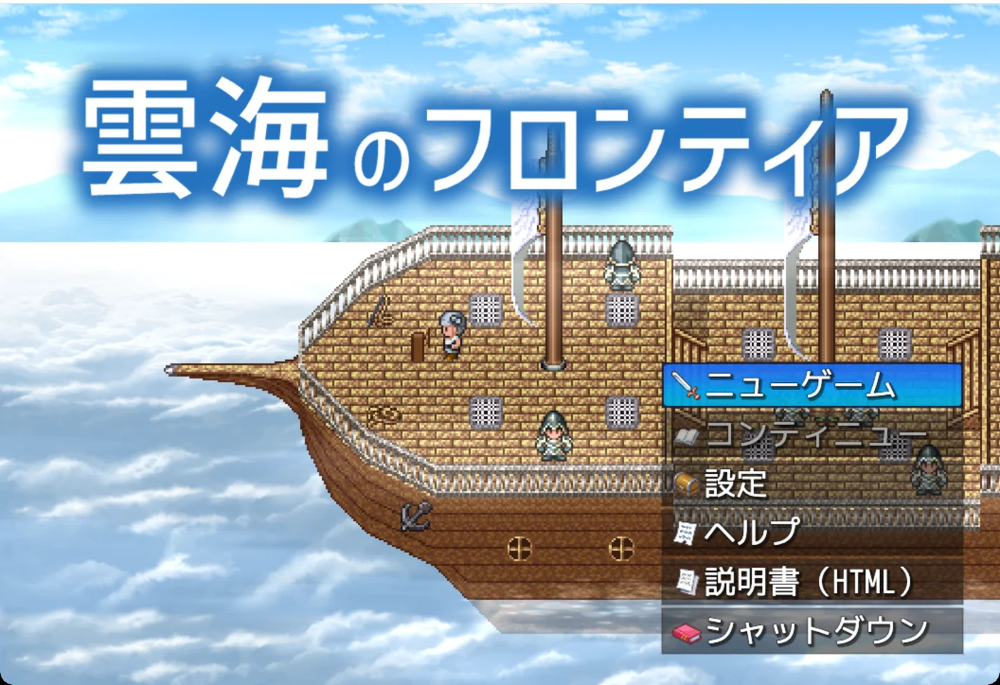
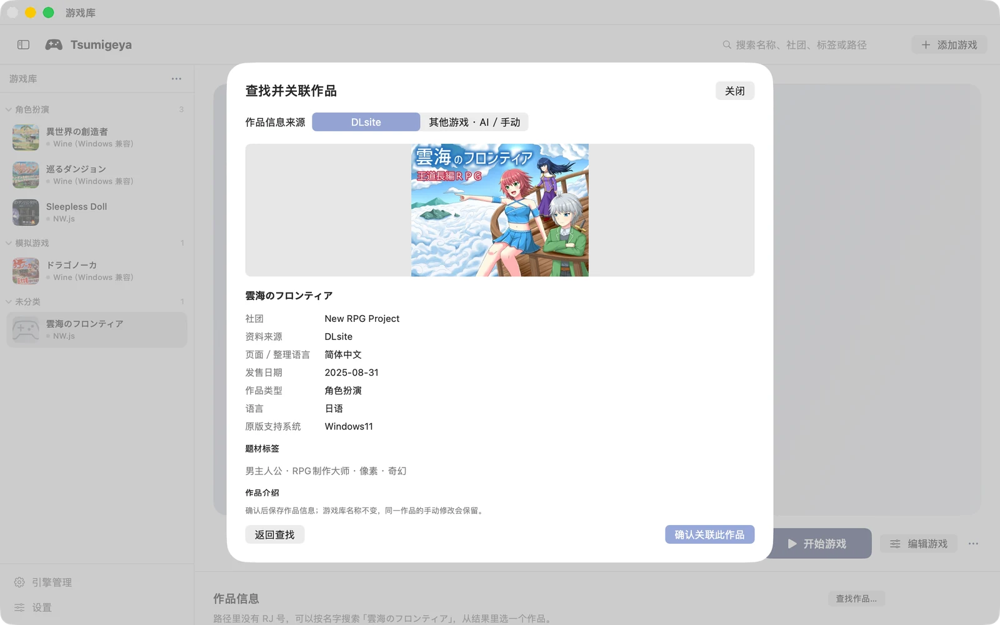
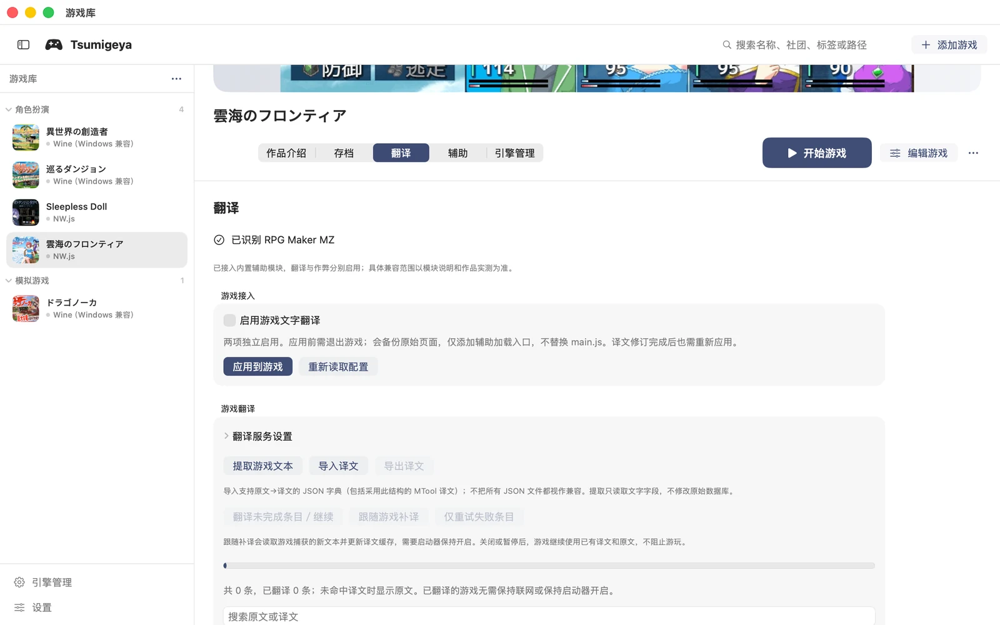

翻译
RPG Maker MV/MZ、XP/VX/Ace、Ren'Py 与 Tyrano 共用译文管理和自选 AI 接口，支持导入导出与跟随补译。
AN OPEN-SOURCE GAME LAUNCHER FOR macOS
把 DLsite 游戏，好好收进你的 Mac。
加入已经解压的游戏，Tsumigeya 帮你识别引擎、准备运行时，补全封面与介绍，再从同一个地方启动、管理和备份进度。
全部是真实界面录屏：批量入库、识别引擎、按 RJ 号补全资料，最后点下「开始游戏」。
音乐：《喵式乱码》 · 演示画面：『雲海のフロンティア』体験版 © New RPG Project
一次扫描，整箱入库。
把散落的文件夹，变成自己的书架。



不必非得是可执行文件，选错了也会自动往上找一层。按目录结构识别引擎，运行时集中安装、统一管理。

点「添加游戏」或按 ⌘O，选游戏目录里的任意文件。

自动识别为 NW.js 等引擎；缺少运行时会提示去「引擎管理」安装。

起个名字，保存进游戏库。之后移动了目录，也能重新定位。

启动状态、引擎参数和启动诊断都在详情页里。退出启动器后，游戏仍然继续运行。
输入作品名、RJ 编号或链接，
封面、介绍、标签与预览图一键补齐。

下表是当前可用的启动路径。真实实测只代表测试过的样本，不是对同一引擎全部作品的保证。
※ 能否运行取决于游戏引擎、脚本、插件和运行时的兼容性；识别成功不代表每部作品都能正常运行。遇到问题欢迎 提交兼容性反馈。
RPG Maker MV/MZ、XP/VX/Ace、Ren'Py 与 Tyrano 共用译文管理和自选 AI 接口，支持导入导出与跟随补译。
显示文字、编辑数值、锁定及数值筛选。具体范围因引擎而异；使用前请先备份存档。
把存档目录导出为 ZIP，需要时再恢复。导入前校验文件并备份原文件，游戏运行时禁止导入导出。
封面和预览图优先读本地缓存、按显示尺寸解码；长介绍原生滚动，切换作品不卡顿。

欢迎提交问题、兼容性记录、文档改进和代码。
需要 macOS 26 或更新版本，以及 Apple Silicon 芯片；当前不提供 Intel 安装包。
Tsumigeya-<版本号>.dmg。Tsumigeya.app 拖进「应用程序」。安装包目前仅做 ad-hoc 签名，未经过 Apple 公证。确认安装包来自本仓库且信任来源后，可在终端执行：
xattr -dr com.apple.quarantine /Applications/Tsumigeya.app这只会移除该应用的下载隔离标记，请不要关闭系统整体安全保护。发布附件中的 SHA256SUMS.txt 可用于检查下载是否完整。